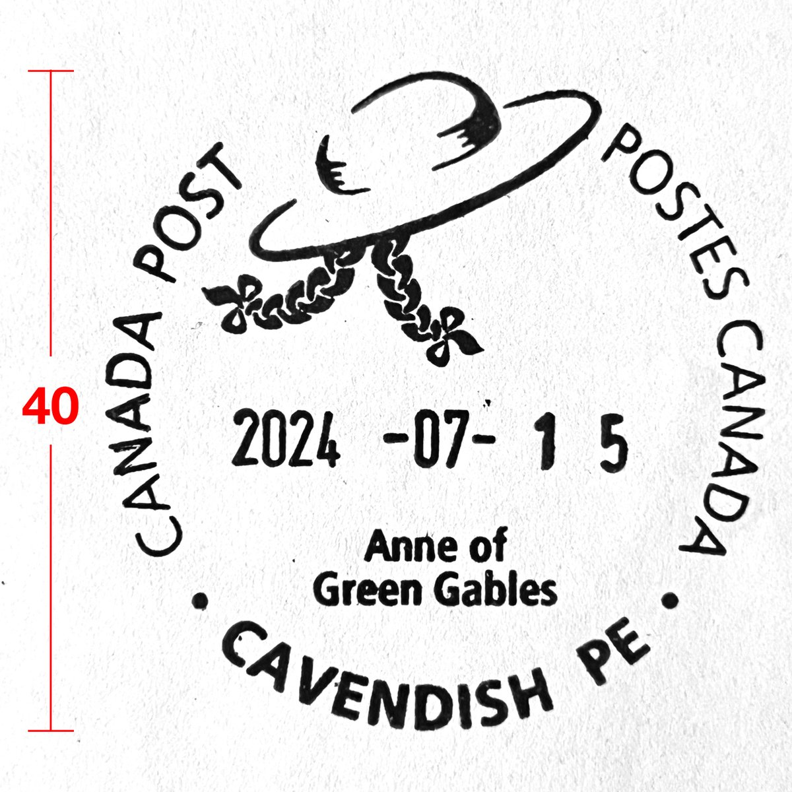

Cavendish PO pictorial cancel
Anne of Green Gables
- Status
- Active
- Run dates
- 2019-01-01 to 2030-12-31
- Design
- "Anne of Green Gables"; straw hat and braids
- Ink colour
- Black
- Designer
- Unknown
- Post office
- Cavendish PO
8555 Cavendish Rd
Cavendish, PE
C0A 1M0 - Subjects
- literature, novel, author, Montgomery, headwear, art, fiction
- Notes
- This post office is open only from Victoria Day weekend (late May) to Thanksgiving weekend (mid-October).
Collect it by mail. Send your stamped covers, with a stamped return envelope, to the post office address above (check the notes first). How to collect pictorial cancels by mail · en français
 Kensington POTown logo
Kensington POTown logo Charlottetown STN CentralEst. 1835
Charlottetown STN CentralEst. 1835 Borden-Carleton POConfederation Bridge
Borden-Carleton POConfederation Bridge Murray Harbour POHome of the Phantom Ships
Murray Harbour POHome of the Phantom Ships